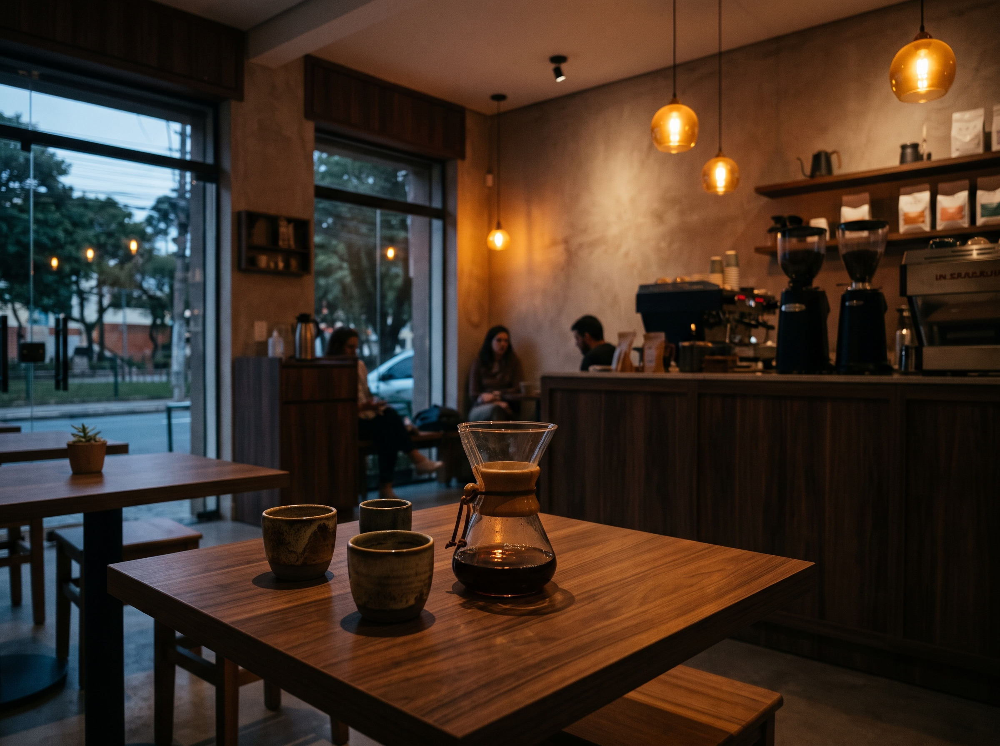
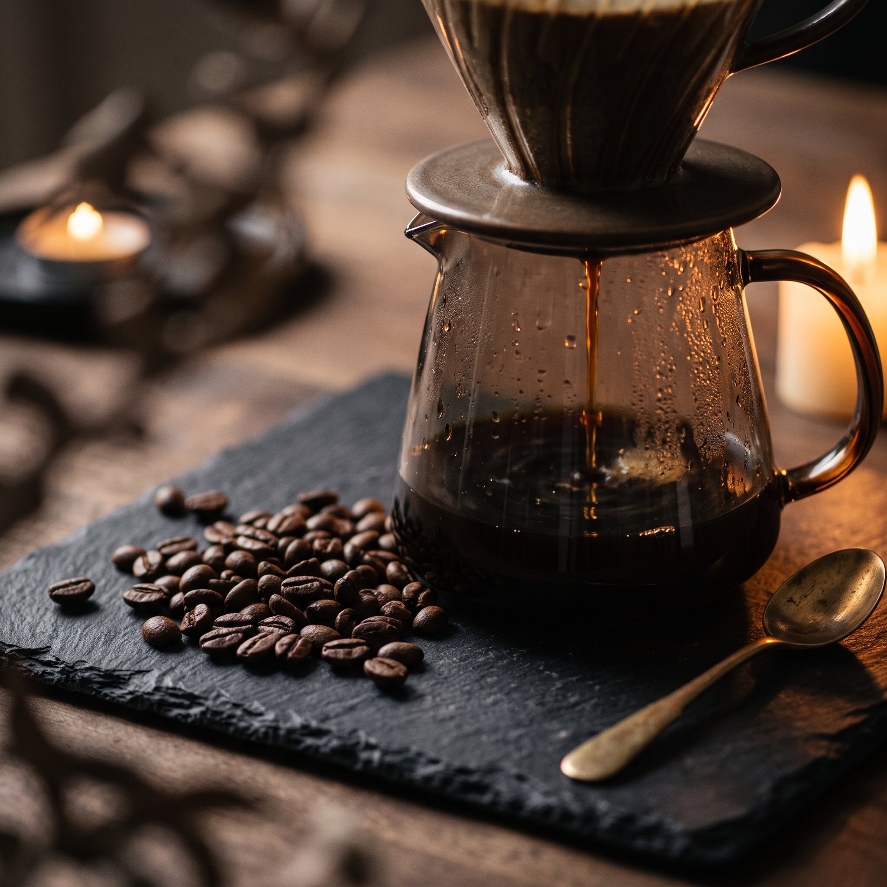
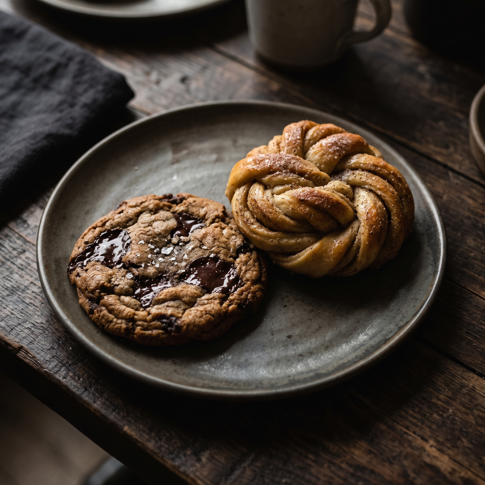

Curva de torra contida
Buscamos doçura de caramelo, cacau e notas frutadas maduras em vez de amargor excessivo.
Grãos de altitude torrados em pequenos lotes, extrações pausadas, receitas de forno com chocolate amargo e especiarias, e cantos pensados para conversas ou leituras sem pressa.

Nada aqui é feito na correria. Cada etapa respeita temperatura, tempo de repouso e aroma.
Buscamos doçura de caramelo, cacau e notas frutadas maduras em vez de amargor excessivo.
Coados manuais, extração a frio de longa maturação e vaporização delicada para manter textura aveludada.
Cookies de borda crocante e miolo macio, brownies densos e massas salgadas saem em fornadas limitadas.


Alguns pedidos nasceram para ir juntos: o contraste entre uma extração encorpada ou cítrica e algo assado no ponto certo, servido morno.
Temos cantos para quem vai escrever, ler, conversar ou buscar um café antes de continuar o caminho.